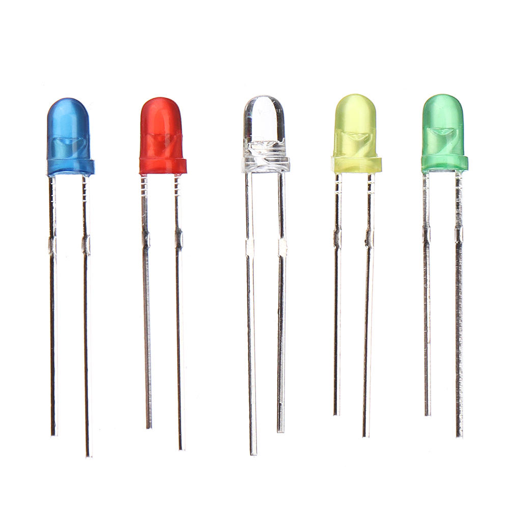
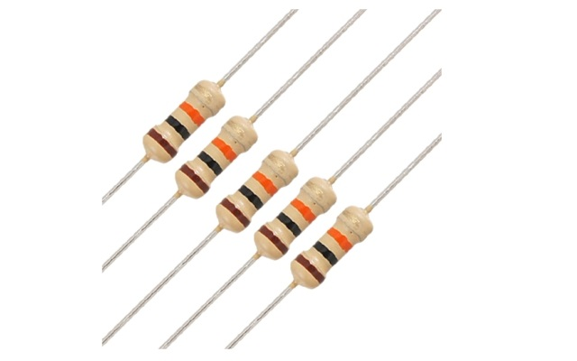
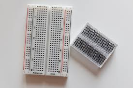
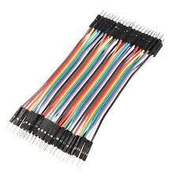

¿Qué es un LED?
Un LED, cuyo nombre completo es "Diodo Emisor de Luz" (por sus siglas en inglés: Light Emitting Diode), es un pequeño componente electrónico que tiene la capacidad de emitir luz cuando por él pasa una corriente eléctrica, es decir, cuando se conecta a una fuente de energía como una pila o una batería, el LED se enciende y produce una luz de color (Cuenca y Déleg, 2020). Esta luz puede ser roja, verde, azul, blanca o de muchos otros colores, dependiendo del tipo de LED utilizado (Tomala, 2024).

Un LED sirve para :
Emitir luz visible en diferentes colores, como rojo, verde, azul o blanco, y se emplea en semáforos, linternas, pantallas y señales luminosas. En el ámbito educativo, es fundamental porque permite a los estudiantes observar en tiempo real cómo fluye la corriente eléctrica en un circuito, lo que facilita la comprensión de conceptos básicos de electricidad y electrónica.
Importante en los circuitos
El LED tiene polaridad, lo que significa que debe conectarse correctamente con el polo positivo (ánodo) y el negativo (cátodo) para funcionar; conectarlo al revés impedirá que se encienda (Hermosa Donate, 2011). Además, es esencial usar una resistencia para limitar la corriente y protegerlo de posibles daños, porque un flujo excesivo de electricidad puede quemarlo.
¿Qué es una Resistencia?
Una resistencia, también conocida como resistor, es un componente electrónico que tiene como función principal limitar o controlar el paso de la corriente eléctrica dentro de un circuito, es decir, actúa como un pequeño freno que evita que la corriente sea demasiado fuerte y dañe otros componentes como el LED.

Una resistencia sirve para:
En los experimentos escolares, las resistencias se utilizan para proteger a los LEDs y otros elementos sensibles. Por ejemplo, si conectáramos un LED directamente a una pila sin resistencia, el LED podría quemarse, porque recibiría más corriente de la que puede soportar. Así, las resistencias permiten regular esa cantidad de energía, cuidando todo el sistema.
Código de colores:
Un dato curioso y muy importante para los estudiantes es que las resistencias tienen rayas de colores, y cada color tiene un número. Estos colores nos indican cuánta resistencia tiene cada componente, lo que ayuda a escoger la correcta para cada actividad.
¿Qué es un protoboard?
El protoboard, también conocido como placa de pruebas o breadboard en inglés, es una herramienta de plástico con muchos agujeros pequeños donde se pueden insertar componentes electrónicos, como LEDs, resistencias y cables, sin necesidad de usar soldadura, lo cual facilita mucho el aprendizaje y la experimentación para los estudiantes.

Un protoboard sirve para:
Su principal función es permitir a los estudiantes y técnicos construir circuitos eléctricos de forma temporal y segura para hacer pruebas, aprender cómo fluye la corriente o experimentar con conexiones sin riesgo de dañar los componentes. Gracias al protoboard, se pueden hacer cambios rápidos sin tener que desarmar todo el circuito.
Partes del protoboard:
Es importante enseñar que el protoboard tiene filas y columnas internas que ya están conectadas por dentro, lo que significa que, aunque no se vean los cables, al insertar un componente en una fila, se está uniendo con los otros agujeros de esa misma fila o columna. Por eso, conocer cómo está distribuido el interior del protoboard ayuda a entender mejor cómo construir un circuito correctamente.
Jumper
Los cables jumpers, también conocidos como cables de puente o simplemente cables de conexión, son alambres flexibles con puntas metálicas que se utilizan para conectar entre sí los diferentes componentes de un circuito electrónico, como LEDs, resistencias o una batería con el protoboard.

Existen tres tipos principales, según los conectores en sus extremos:
1. Macho a Macho (Male to Male)
Ambos extremos tienen pines metálicos expuestos.
Se usan para conectar dos puntos en un protoboard o entre un protoboard y una placa Arduino.
2. Macho a Hembra (Male to Female)
Un extremo con pin metálico (macho) y el otro con conector hueco (hembra).
Útiles para conectar un sensor o componente con pines hembra a una placa de desarrollo.
3. Hembra a Hembra (Female to Female)
Ambos extremos tienen conectores huecos.
Se usan para conectar dos módulos o placas que tengan pines de salida (macho).
https://wokwi.com/projects/437181775690342401